IES Valle del Alberche

📘 Presentación
Colección de problemas resueltos de formulación y nomenclatura de alquenos, según las reglas IUPAC.
Se abordan, de forma progresiva:
- Alquenos lineales y ramificados, con uno o varios dobles enlaces (dienos, trienos…).
- Elección de la cadena principal que contenga el mayor número de dobles enlaces.
- Numeración que otorga el localizador más bajo al doble enlace.
- Isomería geométrica: notación cis/trans y notación (Z)/(E).
- Nomenclatura de cicloalquenos: el doble enlace ocupa siempre la posición 1.
- Paso inverso: escribir la fórmula estructural a partir del nombre.
🎯 Objetivo
- Reconocer el grupo funcional doble enlace C=C y la fórmula general CnH2n.
- Seleccionar la cadena principal: la más larga que contenga el doble enlace; en caso de empate, la que tenga más dobles enlaces.
- Numerar la cadena de modo que el doble enlace reciba el localizador más bajo (con preferencia sobre los sustituyentes).
- Aplicar la terminación -eno (o -dieno, -trieno… según el número de dobles enlaces).
- Distinguir los isómeros geométricos con la notación cis/trans o (Z)/(E).
- Nombrar cicloalquenos asignando la posición 1 al doble enlace.
- Escribir la fórmula estructural de un alqueno a partir de su nombre IUPAC.
📚 Recordatorio teórico: reglas de nomenclatura Pulsame
🧪 ¿Qué es un alqueno?
Los alquenos son hidrocarburos que contienen al menos un doble enlace carbono-carbono (C=C). Responden a la fórmula molecular general CnH2n (para alquenos con un solo doble enlace).
📝 Nomenclatura de alquenos: 4 reglas básicas
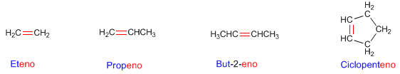
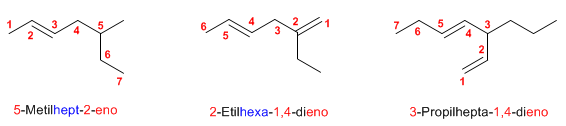
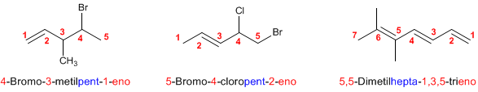
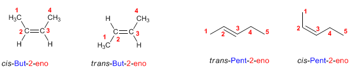
🔬 Notación (Z)/(E) frente a cis/trans
- (Z) (del alemán zusammen, «juntos»): los grupos de mayor prioridad de cada carbono del doble enlace están situados en el mismo lado.
- (E) (del alemán entgegen, «opuestos»): los grupos de mayor prioridad están en lados opuestos.
- cis: los grupos iguales del doble enlace están al mismo lado.
- trans: los grupos iguales del doble enlace están en lados opuestos.
🔄 Cicloalquenos
- En moléculas cíclicas, el doble enlace ocupa siempre la posición 1 y este localizador se puede omitir al nombrar (en ausencia de grupos funcionales prioritarios).
- La numeración continúa en el sentido que dé los localizadores más bajos a los sustituyentes.
- Si hay más de un doble enlace, se elige el sentido que otorgue el conjunto de localizadores más bajo.
🧪 PROBLEMAS RESUELTOS de alquenos Pulsame
Problema 1 Nombra el alqueno
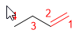
Solución
Nombre: 1-Buteno
Problema 2 Nombra el alqueno (isomería geométrica)
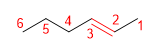
Solución
Nombre: Trans-2-Hexeno
Problema 3 Nombra el alqueno ramificado
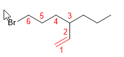
Solución
Nombre: 6-Bromo-3-propilhex-1-eno
Problema 4 Nombra el alqueno (notación Z/E)
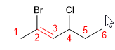
Solución
Nombre: (Z)-2-Bromo-4-clorohex-2-eno
Problema 5 Nombra el alqueno (notación E)
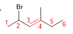
Solución
Nombre: (E)-2-Bromo-4-metilhex-3-eno
Problema 6 Nombra el alqueno con isomería (E)
Solución
Nombre: (E)-3,5-Dimetiloct-4-eno
Problema 7 Nombra el cicloalqueno
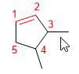
Solución
Nombre: 3,4-Dimetilciclopenteno
Problema 8 Nombra el cicloalqueno ramificado
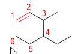
Solución
Nombre: 4-Etil-3-metilciclohexeno
Problema 9 Nombra el alqueno (con pasos)
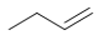
Solución
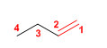
Nombre: But-1-eno
Problema 10 Nombra el alqueno (con pasos)
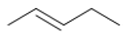
Solución
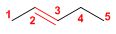
Nombre: Pent-2-eno
Problema 11 Nombra el dieno ramificado
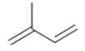
Solución
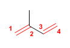
Nombre: 2-Metilbuta-1,3-dieno
Problema 12 Nombra el dieno
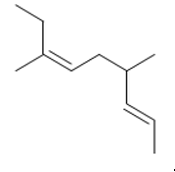
Solución
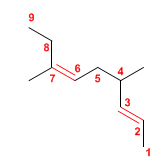
Nombre: 4,7-Dimetilnona-2,6-dieno
Problema 13 Nombra el dieno ramificado
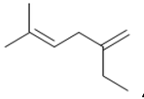
Solución
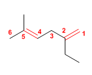
Nombre: 2-Etil-5-metilhexa-1,4-dieno
Problema 14 Nombra el dieno
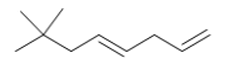
Solución
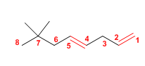
Nombre: 7,7-Dimetilocta-1,4-dieno
Problema 15 Dibuja: 2-Metilhexa-1,5-dieno
2-Metilhexa-1,5-dieno
Solución
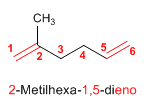
Problema 16 Dibuja: 2,3,4-Trimetilocta-1,4,6-trieno
2,3,4-Trimetilocta-1,4,6-trieno
Solución
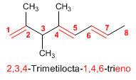
Problema 17 Dibuja: 4-terc-Butil-2-clorohept-1-eno
4-terc-Butil-2-clorohept-1-eno
Solución
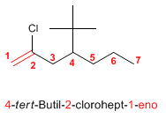
Problema 18 Dibuja: 3-Etil-2,4-dimetilhept-3-eno
3-Etil-2,4-dimetilhept-3-eno
Solución
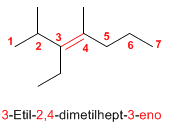
Problema 19 Dibuja: 3,4-Diisopropil-2,5-dimetilhex-3-eno
3,4-Diisopropil-2,5-dimetilhex-3-eno
Solución
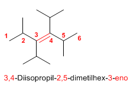
Problema 20 Dibuja: Hept-1-eno
Hept-1-eno
Solución
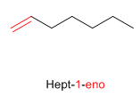
Problema 21 Dibuja: cis-Oct-3-eno
cis-Oct-3-eno
Solución
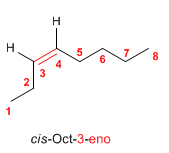
Problema 22 Dibuja: 3-Etilpent-2-eno
3-Etilpent-2-eno
Solución
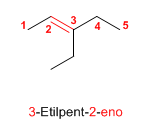
Problema 23 Dibuja: trans-1,4-Dibromobut-2-eno
trans-1,4-Dibromobut-2-eno
Solución
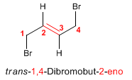
Problema 24 Dibuja: 3-Clorohex-2-eno
3-Clorohex-2-eno
Solución
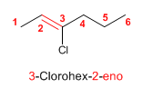
Problema 25 Dibuja: Buta-1,3-dieno
Buta-1,3-dieno
Solución
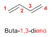
Problema 26 Dibuja: Hexa-1,4-dieno
Hexa-1,4-dieno
Solución
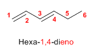
Problema 27 Dibuja: 5-Metil-3-propilocta-1,4,6-trieno
5-Metil-3-propilocta-1,4,6-trieno
Solución
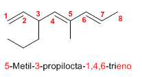
Problema 28 Dibuja: 6-Metil-6-propilnona-2,4,7-trieno
6-Metil-6-propilnona-2,4,7-trieno
Solución
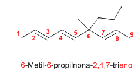
Problema 29 Dibuja: 2,3,5-Trimetilocta-1,4-dieno
2,3,5-Trimetilocta-1,4-dieno
Solución
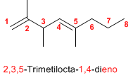
Problema 30 Dibuja: 3-Propilhepta-1,5-dieno
3-Propilhepta-1,5-dieno
Solución
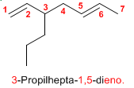
Problema 31 Nombra el cicloalqueno
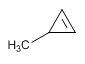
Solución
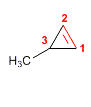
Nombre: 3-Metilciclopropeno
Problema 32 Nombra el cicloalqueno
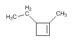
Solución
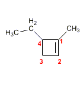
Nombre: 4-Etil-1-metilciclobuteno
Problema 33 Nombra el ciclodieno
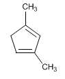
Solución
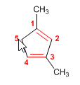
Nombre: 1,3-Dimetilciclopenta-1,3-dieno
Problema 34 Nombra el cicloalqueno
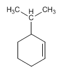
Solución
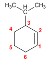
Nombre: 3-Isopropilciclohexeno
Problema 35 Nombra el cicloalqueno
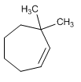
Solución
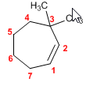
Nombre: 3,3-Dimetilciclohepteno
Problema 36 Nombra el ciclotrieno
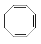
Solución
Nombre: Cicloocta-1,3,5-trieno
Problema 37 Nombra el cicloalqueno (repaso)
Solución
Nombre: 3-Isopropilciclohexeno
Problema 38 Nombra el cicloalqueno
Solución
Nombre: 3-Metilciclopenteno
Problema 39 Nombra el compuesto aromático
Solución
Nombre: Benceno
Nombre alternativo: Ciclohexa-1,3,5-trieno
Problema 40 Nombra el derivado del benceno
Solución
Nombre: 1,3,5-Trimetilbenceno (mesitileno)
Problema 41 Nombra el derivado del benceno
Solución
Nombre: 1-Bromo-3-metilbenceno
- La cadena principal es la más larga que contenga el doble enlace; si hay varios, la que tenga más dobles enlaces.
- Se numera por el extremo que dé al doble enlace el localizador más bajo.
- El nombre termina en -eno, -dieno, -trieno… según el número de dobles enlaces.
- Los dobles enlaces tienen preferencia sobre los sustituyentes en la numeración.
- Isomería geométrica: cis/trans (grupos iguales) o (Z)/(E) (grupos de mayor prioridad). Z = mismo lado; E = lados opuestos.
- En cicloalquenos el doble enlace ocupa la posición 1 (se omite el localizador si no hay grupos prioritarios).
- Puntuación: los números se separan de las letras con guiones, los localizadores entre sí con comas y nunca se dejan espacios.